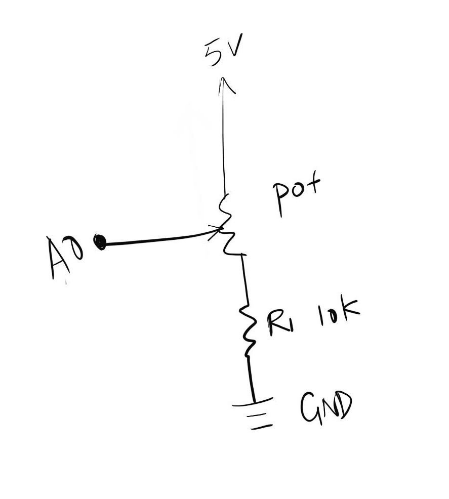

Alice's Assignment 6!
Schematic
In this schematic, a potentiometer is connected to pin A0 on the Arduino, with one end connected to a 5v power, and the other one to the ground. The potentiometer is connected to a 5v power source and gives input to pin A0.
Calculations
The potentiometer is max 10k ohm, so regardless of what I use the circuit will not break. Therefore, I choose a 10k ohm resistor just in case.
Circuit

I used an Arduino board and potentiometer to control the data input. The Arduino board is connected to my computer for power source. Pin A0 is connected to the potentiometer for input, and the power pin (5v) is connected to the potentiometer.
Code
/*
Alice Li
Assignment #6
HCDE 439
Feb 19th, 2019
*/
void setup() {
Serial.begin(9600); // initializes serial communications at 9600 bps
}
void loop() {
int pot = analogRead(A0); // reads the photoresistor input from A0
int mappedPot = map(pot, 0, 1023, 0, 255); // mapping the input to a grapy
Serial.println(mappedPot); // printin the output of collected data
delay(25); // wait for 25 miliseconds
}
sketch.js
var serial; // variable to hold an instance of the serialport library
var portName = 'COM5' //rename to the name of your port
var datain; //some data coming in over serial!
var xPos = 0;
function setup() {
serial = new p5.SerialPort(); // make a new instance of the serialport library
serial.on('list', printList); // set a callback function for the serialport list event
serial.on('connected', serverConnected); // callback for connecting to the server
serial.on('open', portOpen); // callback for the port opening
serial.on('data', serialEvent); // callback for when new data arrives
serial.on('error', serialError); // callback for errors
serial.on('close', portClose); // callback for the port closing
serial.list(); // list the serial ports
serial.open(portName); // open a serial port
createCanvas(1200, 800);
background(0x08, 0x16, 0x40);
}
// get the list of ports:
function printList(portList) {
// portList is an array of serial port names
for (var i = 0; i < portList.length; i++) {
// Display the list the console:
print(i + " " + portList[i]);
}
}
function serverConnected() {
print('connected to server.');
}
function portOpen() {
print('the serial port opened.')
}
function serialError(err) {
print('Something went wrong with the serial port. ' + err);
}
function portClose() {
print('The serial port closed.');
}
function serialEvent() {
if (serial.available()) {
datain = Number(serial.readLine());
//console.log(datain);
}
}
function graphData(newData) {
// map the range of the input to the window height:
var yPos = map(newData, 0, 255, 0, height);
// draw the line in a pretty color:
stroke(255, 0, 80);
line(xPos, height, xPos, height - yPos);
// at the edge of the screen, go back to the beginning:
if (xPos >= width) {
xPos = 0;
// clear the screen by resetting the background:
background(0x08, 0x16, 0x40);
} else {
// increment the horizontal position for the next reading:
xPos++;
}
}
function draw() {
graphData(datain);
}
//background(0);
//fill(255);
//if (datain == 0) {
// text("button pressed: YES", 30,30);
//} else {
// text("button pressed: NO", 30,30);
//}
//}
Circuit Operation
This gif shows the operation of the circuit. When the potentiometer moves, the web page draw a graph corresponding to the data input.